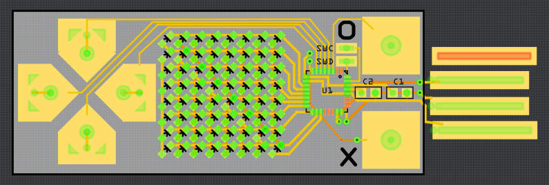
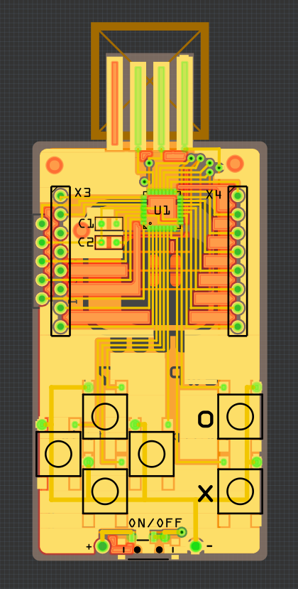

A Series of Insights¶
Published on 2018-07-15 in PewPew Standalone.
Today has been a rollercoaster of emotions — I blame not getting enough sleep last night. Basically every time I finished some part of the design, I had a new great idea that required me to redo everything from scratch, and as soon as I did that, I had a new idea, etc. — until I made a full circle and ended up with something very close to PewPew 5.0, only with fewer parts. In the process I had to ditch the business card idea, so I renamed this project now. But let’s go through it in order.
As I wrote in the previous log, I spent the night routing charlieplexed 16×8 matrix of bi-color LEDs. But following the “no PCB orders after midnight” gremlins rule, I decided to let the design sit for a bit and mature. In the morning I realized that since I’m driving the LEDs in software I have more flexibility than a simple on/off, and that therefore I can replace the four colors of the original PewPew with shades of the same color in the cheap version. That reduces the costs considerably, because not only single-color LEDs are much cheaper than bi-color ones, but also I only need to charlieplex 8×8 LEDs, which can be done with 9 pins. I can also make the whole thing much smaller. So I designed this:
I didn’t make a proper board outline to account for the USB plug, and the battery is missing — it would go on the back. There are some problems with this design, though: the whole thing is simply too small, the touch pads are too close to each other, and the display is too small (also, I put the vias on the footprints of the LEDs, which allegedly can be problematic when using solder paste).
So I kept thinking and experimenting. I could use larger LEDs, but they are more expensive and usually take more current. I could put the LEDs on the back of the board, up-side-down, and have square windows in the copper and soldermask — but a quick experiment with a word clock PCB that I got from @davedarko made me realize that I really don’t want to solder a lot of tiny LEDs up-side-down. I looked for “bottom view” LEDs, but they seem to be designed to be inserted into holes in the PCB.
Then a second realization struck: if I’m not using bi-color LEDs, then I can simply use a monochromatic 8×8 LED matrix — not only it is cheaper than all those LEDs, not only it’s infinitely easier to solder, not only I have a whole bunch of them lying around, not only they actually have square pixels, but also I have exactly 16 free pins, so no charlieplexing is necessary.
In the mean time I also made a series of experiments with batteries, and realized that unless I use a rechargeable coin cell battery, it’s not going to be able to power this device. I looked at the prices of different batteries out there, and I decided that if this device is supposed to be cheap and accessible, then I need to use AA alkaline batteries. Which of course defeats the whole idea of a flat business card.
So a thicker device, the size of a 2×AA battery holder, with the said holder on the back, and with a 32×32mm matrix on the front. But the matrix is quite thick too, and that makes using touchpads awkward. Hmm, let me check again how much those buttons cost? Oh, I got 1000 pieces for $16. I suppose I can as well put them back. And a power switch too, because sleep modes of SAMD21 are not yet that well supported in CircuitPython. Hmm, ok, so where does that leave us? Basically here:
It looks pretty much the same as PewPew 5.0, but has 2x fewer parts and is proportionately cheaper. Of course I still need to write the code that will drive the matrix — it has to live in a timer, so I can’t write it in Python, it has to be compiled into the firmware — but that should be easy. Now, according to my rough calculations, materials for making 20 pieces of this should cost me around $60, with shipping. Add assembly costs, handling and some margin for unforeseen circumstances, and I should be able to sell them at the same price as the original PewPew Lite FeatherWing! Shipping may be problematic, considering the thickness of the whole thing, but maybe if the battery holder is separated…
Anyways, let’s not get ahead of ourselves. A lot of work remains to be done.